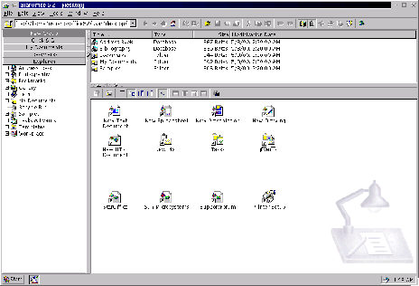

Next: El explorador
Up: StarDesktop: El Entorno de
Previous: Modos de visualización
Índice General
Además de los elementos ya vistos y las ventanas de los documentos, en
StarOffice pueden estar visibles otros dos elementos, el
Explorador y el Beamer. Ambos se activan y
desactivan desde el menú [Ver]. En la figura
5.4 se observa un aspecto de
StarOffice con el Explorador a la izquierda, el Beamer a la derecha
arriba y el desktop a la derecha abajo.
Figura 5.4:
El Desktop con elementos desplegados
|

|
Subsecciones
Proyecto Cursos - LuCAS - http://lucas.hispalinux.es/htmls/cursos.html